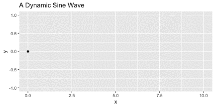

Static sine wave
We will create a static plot first:
ggplot(data = tibble(x=seq(0,10,0.1), y=sin(seq(0,10,0.1))),
aes(x=x, y=y)) +
geom_point() +
ggtitle(" A Static Sine Wave")
I recently tried out gganimate to make some dynamic plots in R. Today I want to try out two other packages; gifski and magick, to see how easy it is to export some simple GIFs. It looks like magick can do a lot of image processing tasks, while gifski is pretty focused on the one task: images > GIF.
library(tidyverse)
library(gifski)
library(magick)We will create a static plot first:
ggplot(data = tibble(x=seq(0,10,0.1), y=sin(seq(0,10,0.1))),
aes(x=x, y=y)) +
geom_point() +
ggtitle(" A Static Sine Wave")
Now we will try create a dynamic version with gifksi:
plot_sine <- function(i) {
p <- ggplot(data = data.frame(x=i,y=sin(i)), aes(x=x, y=y)) +
geom_point() +
ylim(c(-1,1)) +
xlim(c(0,10)) +
ggtitle("A Dynamic Sine Wave")
print(p)
}
save_gif(expr = pwalk(list(seq(0,10,0.1)), plot_sine),
gif_file = "gifski_sine_wave.gif",
width = 72*6, height = 72*3, res=72,
delay = 0.1, loop = TRUE, progress = FALSE)Now we’ll try the same with :tophat::rabbit2::
# Make a directory to save png images in
dir.create("sine_wave_images")
# Create images
walk(1:101, function(i) ggsave(filename = str_glue('sine_wave_images/{str_pad(i,3,"left","0")}.png'),
plot = plot_sine(seq(0,10,0.1)[i]),
width = 6,height = 3, units = "in", dpi=72))
# Read in images, stitch them together, animate and write out
lapply(list.files("sine_wave_images/", full.names = TRUE),
image_read) %>%
image_join() %>%
image_animate(fps = 10) %>%
image_write(path = "magick_sine_wave.gif")
Check the size of each GIF file:
utils:::format.object_size(file.size("gifski_sine_wave.gif"), units = "auto")
139.5 Kb
utils:::format.object_size(file.size("magick_sine_wave.gif"), units = "auto")
1.6 Mb
The magick gif is ~10 times larger … I’m not sure why. gifski has another function save_gif. Let’s try use that function to create a GIF using the same images, then check the file size.
Using the same png files:
gifski(png_files = list.files("sine_wave_images/", full.names = TRUE),
gif_file = "gifski_sine_wave2.gif",
width = 72*6, height = 72*3,
delay = 0.1, loop = TRUE, progress = TRUE)
# Remove individual images now we have our gifs
unlink("sine_wave_images/", recursive = TRUE)Check the size of the new GIF
utils:::format.object_size(file.size("gifski_sine_wave2.gif"), units = "auto")
139.5 Kb
It’s the same size :shrug:. There’s probably some magick options we could tweak to reduce the file size, but since this was just for fun I’ll leave it there for now.